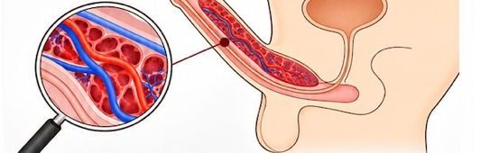

Depois dos 40, muitos homens percebem mudanças na disposição — mas nem sempre conversam sobre isso
Uma conversa sobre rotina, alimentação, circulação e cuidados com a saúde masculina. Entenda o que dizem as pesquisas e saiba como consultar as informações do Alpha69.
Uma história que pode ser familiar
Marcos, 45 anos, sempre conciliou trabalho, família e compromissos. Com o tempo, começou a perceber que sobrava menos energia para as atividades de que gostava. Em vez de procurar uma resposta rápida, decidiu prestar mais atenção à rotina e buscar informações confiáveis.
Na pesquisa, encontrou recomendações sobre alimentação, atividade física, sono e acompanhamento profissional. Também se interessou por saber mais sobre produtos disponíveis no mercado, incluindo o suplemento alimentar Alpha69.

Saiba como funciona
A ereção envolve uma combinação de estímulos nervosos, sinais químicos e circulação sanguínea. Quando ocorre estímulo, a musculatura lisa dos vasos e tecidos eréteis relaxa, facilitando a entrada de sangue nos corpos cavernosos. Essa resposta depende da atuação coordenada de diferentes sistemas do organismo.
Idade, medicamentos, tabagismo, doenças metabólicas, saúde cardiovascular e fatores emocionais podem influenciar esse processo. Dificuldades persistentes merecem avaliação de um profissional de saúde.

Ilustração educativa simplificada do fluxo sanguíneo nos tecidos eréteis; não representa a ação de nenhum produto.
Conheça o Alpha69

Consulte a composição antes de decidir
Converse com a equipe da Bio Saúde para obter informações de rotulagem, ingredientes, modo de uso, preços, kits e entrega. A indicação e a segurança dependem das características reais do produto e de cada pessoa.
O que se sabe sobre os efeitos da alimentação no sistema circulatório
Nas últimas décadas, pesquisas clínicas ajudaram a esclarecer como a alimentação influencia fatores de risco cardiovascular. Entre as evidências mais conhecidas estão estudos com padrões alimentares mediterrâneos e a dieta DASH. Os resultados dizem respeito à saúde e à alimentação, e não demonstram benefícios clínicos do Alpha69.
Um ensaio com 7.447 participantes avaliou a dieta mediterrânea enriquecida com azeite de oliva extravirgem ou oleaginosas. Em comparação ao grupo controle, os grupos de intervenção apresentaram risco relativo aproximadamente 30% menor para um desfecho combinado de infarto, AVC ou morte cardiovascular. A publicação original de 2013 foi retirada e substituída em 2018 após identificação de problemas em procedimentos de randomização; a nova análise preservou a direção dos resultados.
Fonte: NEJM, análise republicada em 2018 ↗As diretrizes de prevenção cardiovascular da Sociedade Europeia de Cardiologia destacam o consumo de vegetais, frutas, grãos integrais, peixe e gorduras predominantemente insaturadas. Também descrevem evidências favoráveis aos padrões mediterrâneos. Isso não equivale à recomendação de um suplemento específico.
Fonte: ESC, 2021 ↗No estudo publicado no New England Journal of Medicine em 2001, participantes com hipertensão que seguiram a dieta DASH com baixo teor de sódio apresentaram pressão sistólica média 11,5 mmHg menor do que aqueles no grupo da dieta controle com alto teor de sódio. Trata-se da comparação entre duas combinações alimentares, não do efeito isolado da dieta DASH.
Fonte: NEJM, 2001 ↗O Consenso Princeton III reconhece a disfunção erétil como possível marcador de risco cardiovascular. Em alguns homens, sintomas podem anteceder manifestações de doença cardiovascular em alguns anos, embora esse intervalo varie e não seja uma regra individual. Por isso, sintomas persistentes justificam avaliação médica de fatores de risco, sem depender de uma idade de corte universal.
Uma das vias importantes para a ereção envolve o óxido nítrico, que participa do relaxamento da musculatura lisa vascular. Essa explicação fisiológica não demonstra que o Alpha69 aumente óxido nítrico, melhore a ereção ou previna doenças.
Fonte: Princeton III Consensus ↗O que a ciência permite concluir: alimentação equilibrada, cuidados preventivos e acompanhamento de fatores de risco importam para a saúde cardiovascular. As pesquisas mencionadas não avaliaram o Alpha69 e não podem ser usadas como prova de eficácia do suplemento.
O que você pode conferir antes de comprar
- Lista de ingredientes e informações completas do rótulo.
- Quantidade por embalagem e orientações de uso.
- Preços, kits disponíveis e formas de pagamento.
- Valor do frete e condições de entrega para seu CEP.
- Dados da empresa responsável e canais de suporte.

Quer conhecer o Alpha69 sem compromisso?
Para os 100 primeiros
+ brinde especial no seu pedido
O atendimento comercial pode informar composição, preços e condições. Nenhuma compra é obrigatória.
FALAR COM UM CONSULTOR PELO WHATSAPPDúvidas frequentes
O Alpha69 é medicamento?
Não. É divulgado como suplemento alimentar. Consulte a rotulagem e informações oficiais do fabricante.
Como vejo preços e kits?
O Call Center apresenta as condições comerciais pelo WhatsApp.
Os estudos científicos comprovam o efeito do Alpha69?
Não. Os estudos citados tratam de alimentação e saúde cardiovascular, e não avaliaram esse suplemento.
Preciso de avaliação médica?
Se houver sintomas persistentes, dúvidas sobre segurança ou uso concomitante de medicamentos, procure um profissional de saúde.